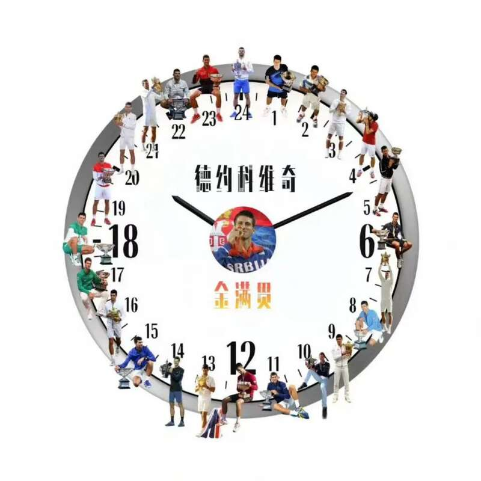

巴黎奥运会网球男单决赛，德约科维奇双抢七战胜阿尔卡拉斯，获得金牌，以37岁的年龄成就个人金满贯！
恭喜德约科维奇，网球goat实至名归！恭喜德约。
24个大满贯，参加五届奥运终获金牌，网球goat实至名归！
今天德约和阿卡的这场球真的太精彩了。

两盘抢七，两个多小时，好多神仙球。面对脚力超群的阿卡，德约展现出他世界第一的技术。
发球虽然不快，但是落点极其精准。
世界第一的接发，永远敢拼敢抢。
虽然没像阿卡那样大范围跑动救球，但每一次移动都很合理。
尽量减少非受迫性失误，不做无意义的丢分。
德约就像在打太极，也像开了手冢领域。你看不到他大范围移动，但他总是出现在球飞来的位置。
这是德约科维奇二十年职业生涯的缩影，是出神入化的网球技术的胜利。
恭喜德约科维奇，谁能想到这位37岁的老将，还能打出如此精彩的网球，打出这样近乎完美的比赛呢。
同时阿尔卡拉斯也不要太伤心，他还只有21岁，还有很多年可以进步，很多个冠军可以拿。
这次，就让德约科维奇圆梦了！
Advertisements